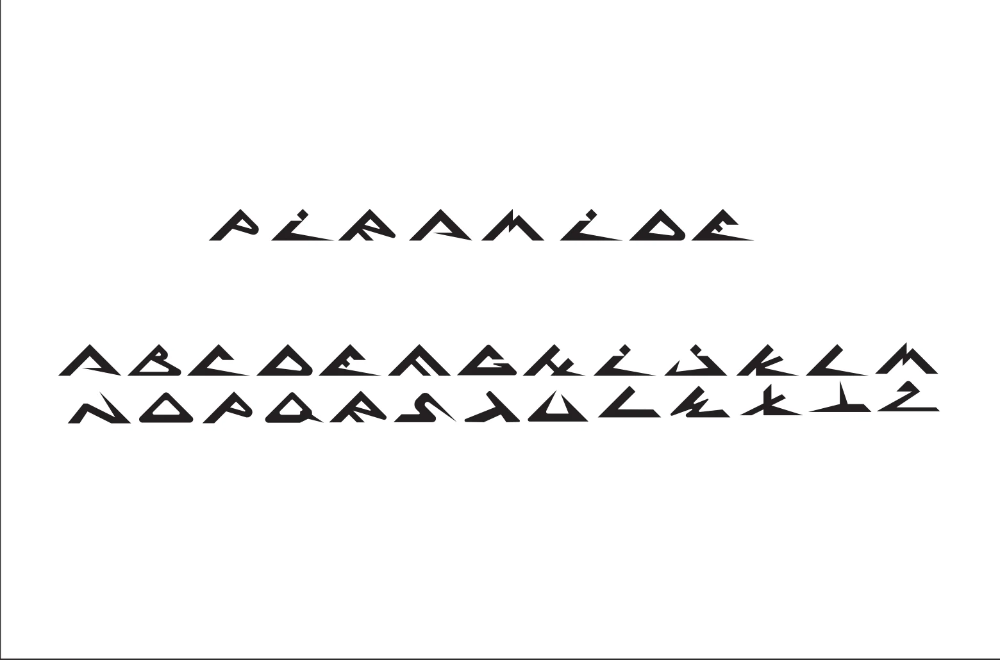

Piramide
Création d’une typographie inspirée d’un bâtiment parisien.

Une typographie inspirée de la pyramide du Louvre. Chaque lettre touche les trois angles de cette pyramide.
Les lettres sont modernes et dynamiques, représentant ce qu’apporte la pyramide au Louvre. Elles respectent les proportions et suivent les points du quadrillage créé par la structure interne de la pyramide.
Je l’ai nommée Piramide pour distinguer le nom de la typographie de celui du monument et faciliter sa recherche sur Internet.